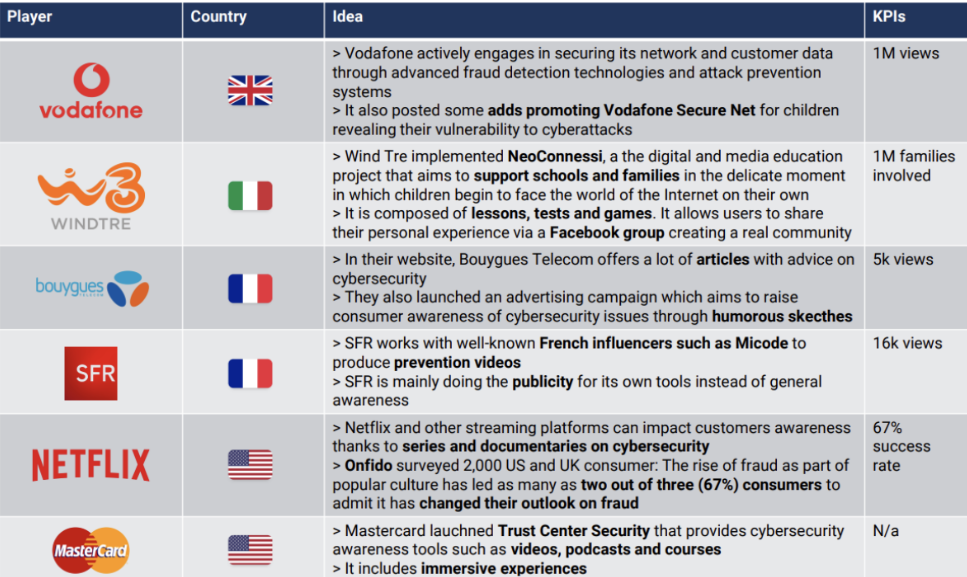
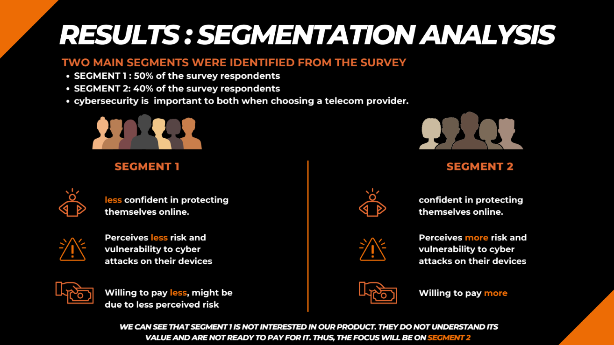
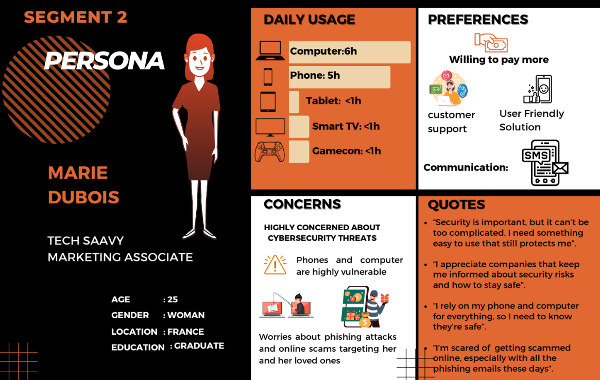
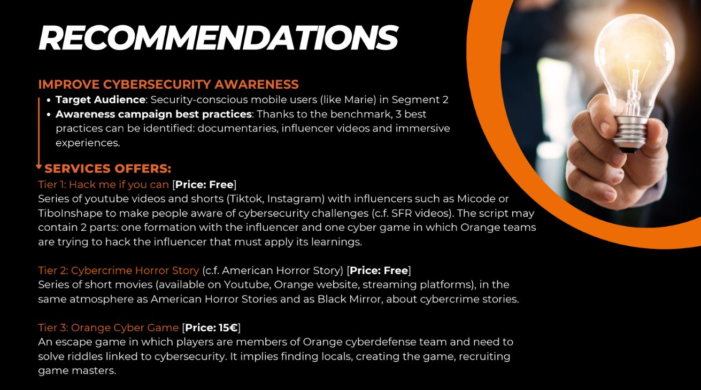
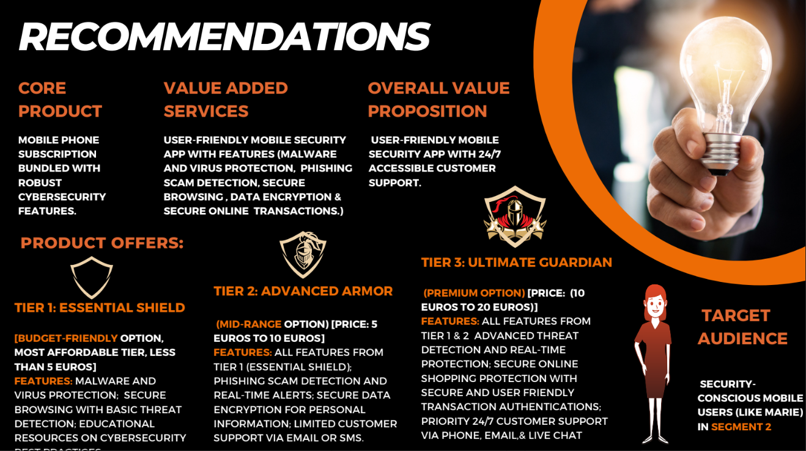
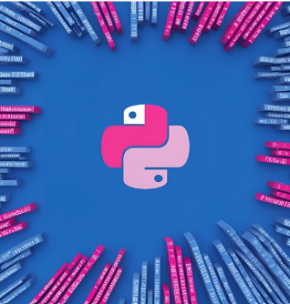
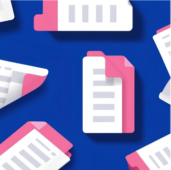

Hello, I'm Rachana Yellavula
Having worked as both a Data Analyst for CitiBank and a Consmer Insights Analyst for Pernod Ricard, I now understand both data and marketing perspectives. I aim to bridge the gap between data and marketing.
So, let's goHaving worked as both a Data Analyst for CitiBank and a Consmer Insights Analyst for Pernod Ricard, I now understand both data and marketing perspectives. I aim to bridge the gap between data and marketing.
So, let's goThis was my first end-to-end market research project at ESSEC, where my team of four collaborated with Orange, a French telecom company, to analyze the cybersecurity market. Our goal was to identify entry strategies, define target segments, determine effective approaches, understand customer needs, and propose products that align with the value proposition.
We began with secondary research to explore the major cyberattacks and online frauds in Europe, as well as the solutions telecom companies provide to protect consumers.
1.Review of current trends:
Cyberattacks and online frauds in Europe have surged, mirroring global trends. Phishing alone accounts for 36% of data breaches, 74% of attacks on French companies, and 1.2% of all email traffic in 2022. In France, account hacking rose by 97.5% between 2021 and 2022, with 92% of cybersecurity-related web searches coming from private individuals.To counter these threats, European telecom companies employ email filtering, backups, two-factor authentication, and network monitoring. They also enhance network security, encryption, and anti-phishing systems to protect both their infrastructure and customers. Additionally, national cybersecurity agencies collaborate with private firms to strengthen defenses and ensure compliance with international standards.
2.Competitor & Benchmark analysis:

After the secondary research, we conducted primary research to segment a European market based on consumers' perceived cyberattack risk, cybersecurity expectations/needs, and the link between telecom-provided cybersecurity and corporate sustainability. We also analyzed segmentation by age, occupation, and other socio-demographic factors to gain deeper insights.
1.Quantitative Survey:
To analyze the French cybersecurity market, we designed a 26-question survey to gather insights on consumer awareness, needs, and segmentation. The survey covered key factors such as telecom provider choice, cybersecurity importance, perceived vulnerabilities, and online safety confidence.
We assessed respondents' exposure to cyber threats, awareness of Business Email Compromise (BEC), trust in telecom-provided protection, and satisfaction with cybersecurity measures. Additionally, we explored 2FA usage, antivirus adoption, interest in cybersecurity services, preferred safety features, deterrents, and willingness to pay. We also included socio-demographic variables like age, occupation, income, and parental status.
2.Segmentation:
Following the collection of responses on qualtrics, a rigorous analysis was conducted using statistical software called Enginius to identify trends, correlations, and insights pivotal to our research objectives. We found 2 major segments from this analysis.

3.Targeted Segment Persona:

After identifying the target segment, we developed a strategy and tailored products to meet its specific needs.


This was my first international multi-market project with the aperitif brand Lillet, and I was very excited. Lillet was launching a new packaging design in four key markets, and a market research study was conducted in all four to understand the performance of the new design compared to key competitors. I wanted to understand the brand better before attending the briefing session.
I started from the beginning. I surfed a bit to understand what an apéritif is. An apéritif is an alcoholic beverage typically served before a meal to stimulate the appetite. The word apéritif comes from the Latin word aperire, meaning to open, which reflects its purpose of preparing the palate and stomach for food.
Now that I understood what an apéritif was, I wanted to learn more about the brands in this category and how they were perceived from a consumer’s point of view. I was also interested in identifying the leading markets and understanding how Lillet was performing compared to its competitors from a consumer perspective.
While considering more reliable methods to authentically understand the brand, I suddenly remembered my marketing research professor mentioning that user-generated content (UGC) is the new oil.
My initial plan was to scrape all Lillet reviews on Amazon. However, since the project included competitor studies, I focused on the most recent three years of reviews for Lillet and its competitors.
Webscraping: I wrote a Python code using BeautifulSoup and Pandas.Data - Cleaning: I used Excel formulas to clean the data. Data - Visualisation: Power BI to build dashboards
After my initial analysis, I understood that all 3 brands have relatively good ratings. The slight drop in Lillet's ratings was not due to the product itself but rather because of damages occurring during deliveries. Different brands have different leading markets. As Campari and Aperol are both Italian brands, Italy was the lead market for both. However, for Campari the other key market was Germany, while for Aperol the other key market was the UK, where it is well known as Spritz.For Lillet, being a French brand, France is one of its key markets, but Germany leads in terms of the number of reviews for Lillet. This insight was quite helpful as the Lillet team treats Germany as the lead market. Regarding seasonality, France saw more Lillet reviews during the holiday season of November, December, and January.
Although the insights I gathered were not directly related to the pack restage itself, I was able to understand the brand better & help the team study the market research results more effectively in each market according to their needs. Therefore, I would say this initial personal work provided me with valuable insights before diving into the project.

Python for webscraping

Excel files generated